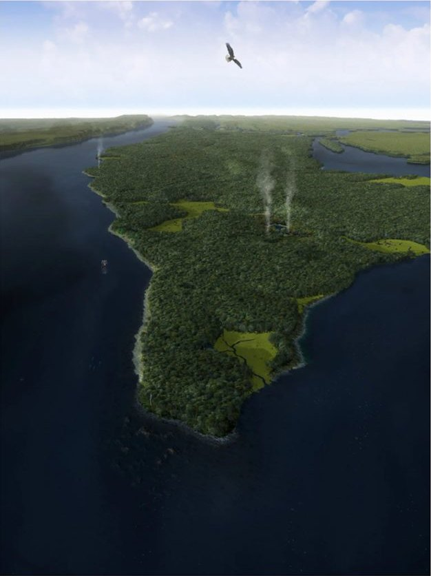
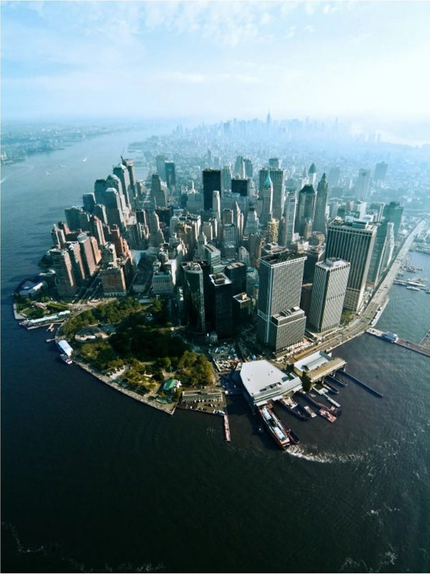

Urban ecosystems and resilience
A city is an ecosystem too. How do we design one that can take a hit and keep going?
Photo: Central Park Conservancy
Manhattan in 1609 and now
Before the city, this island was a forest, wetland and shoreline. Tap the first three icons to look closer, then tap the pencil and type your answer.


Same island, 400 years apart
Look at the two views. On the left is a recreation of Manhattan in 1609. On the right is lower Manhattan today.

Left: Mannahatta circa 1609 (recreation), Markley Boyer / The Mannahatta Project. Right: Stephen Amiaga. Via Wildlife Conservation Society. Open the interactive comparison
Small island, many ecosystems
Why it matters: a small place can hold a lot of different habitats, and each one does a job for the whole system.
Nature and people were connected
Whales and money. Early sketches of Manhattan show a whale in the Hudson River. A church charter claimed dead whales that washed ashore, for their oil and bone. Wildlife was part of the local economy.
One place, many services. Forest, wetland and shoreline gave food, clean water and protection from storms at the same time. Take one away and the others change too.
A different path. The ecologist wonders what if the country had been settled from the West: Manhattan might have been protected as a national park.
Type your answer
What did the city lose when forest and wetland became buildings, and how could it bring one part back? Write 2 to 4 sentences in your own words.

A city is an ecosystem. Design it with people, nature and technology together, and it can bounce back.
- Study the city in three ways: nature in it, the whole city as a system, and design for it.
- Compact, circular cities use fewer resources than sprawling ones.
- A resilient city plans for the social, ecological and technical parts together.